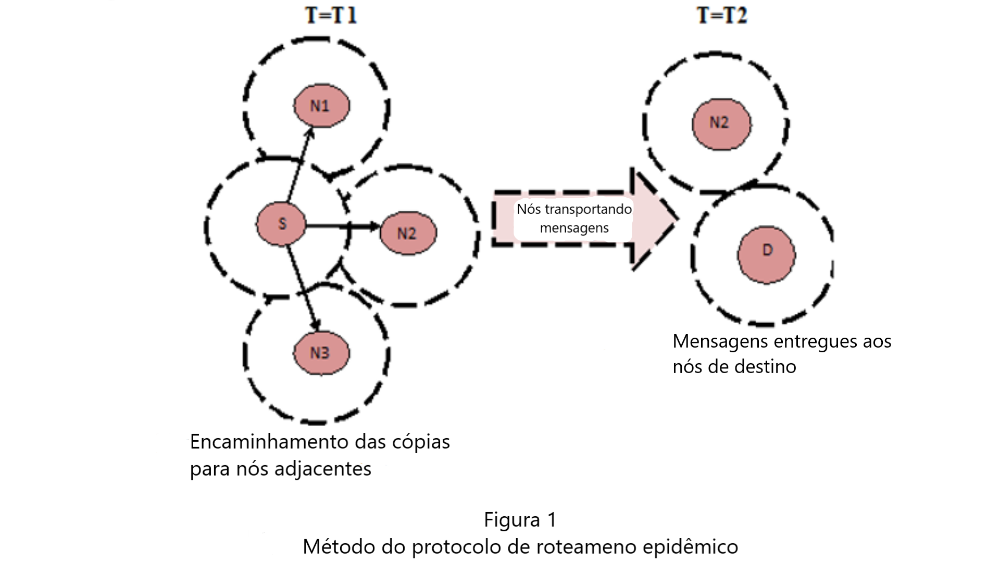

Primeiro protocolo de roteamento em redes DTN.
Possui um algoritmo de roteamento baseado em inundação.
Os principais objetivos do roteamento epidêmico são:
1) Maximizar a taxa de entrega das mensagens,
2) Minimizar a latência das mensagens e
3) Minimizar os recursos totais consumidos para
entrega das mensagens.
Neste esquema de roteamento, o nó que recebe a
mensagem encaminha uma cópia para cada outro nó
que encontra. Então a mensagem é difundida na
rede por nós móveis até que todos os nós tenham
os mesmos dados, embora não haja garantia de
entrega das mensagens. Tal algoritmo seria
análogo a um melhor-esforço para alcançar o
destino.
Cada mensagem e seu identificador único são
armazenados no buffer dos nós, e a sua lista é
chamada de vetor de sumário. Quando nós
adjacentes se encontram, trocam e comparam seus
vetores de sumário para identificar quais mensagens
não possuem e requisitá-las. O esquema é
apresentado na figura 1.

Adaptado de: "Performance of Efficient Routing Protocol in Delay Tolerant Network: A Comparative Survey" M. Namita e M. Shah (2014)
Esse tipo de roteamento resulta em um uso
ineficiente dos recursos de rede como energia e
banda, devido às múltiplas cópias da mesma
mensagem, além de memória. É perceptível que o
roteamento epidêmico fornece difusão rápida das
cópias, e levando a um tempo de entrega ótimo.
Contudo, a inundação também provoca aumento na
quantidade de pacotes de controle e, portanto,
no congestionamento da rede.
O roteamento epidêmico é indicado na falta de
algoritmos mais eficientes. É especialmente útil
quando há pouca ou nenhuma informação sobre a
topologia da rede e os padrões de mobilidade dos
nós.